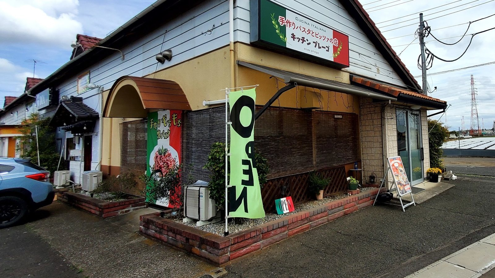
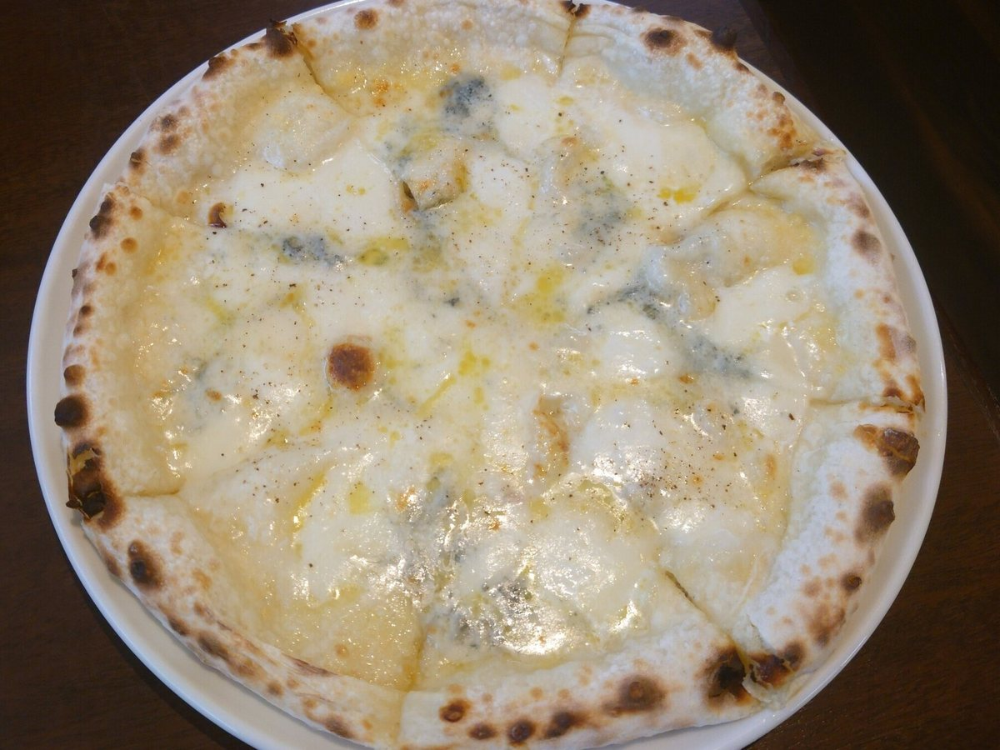
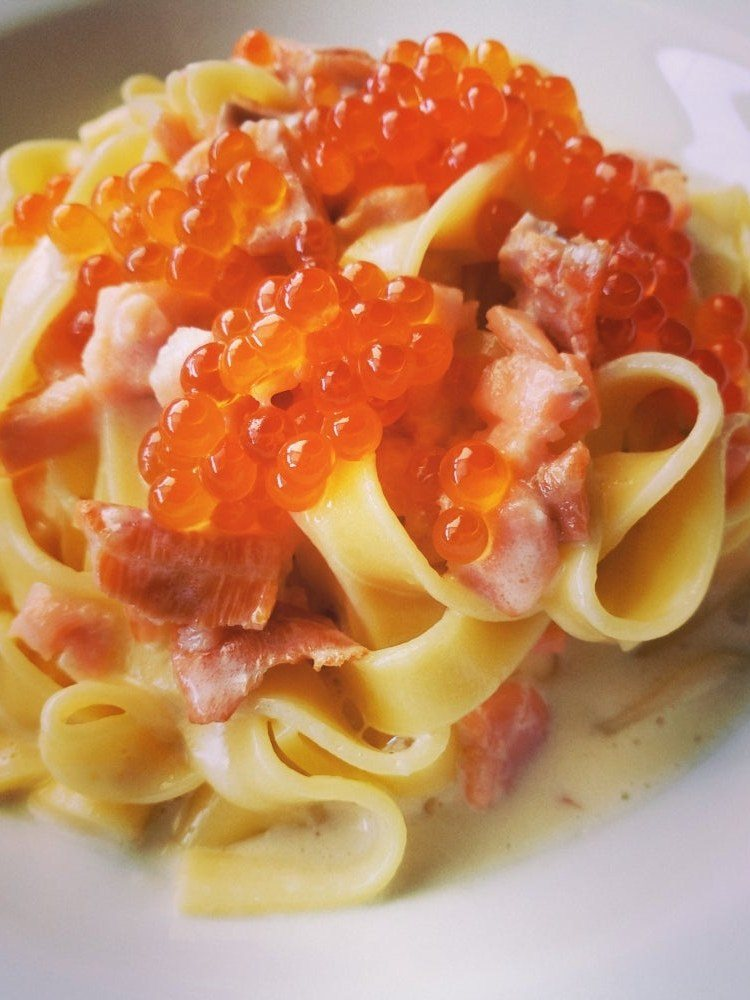
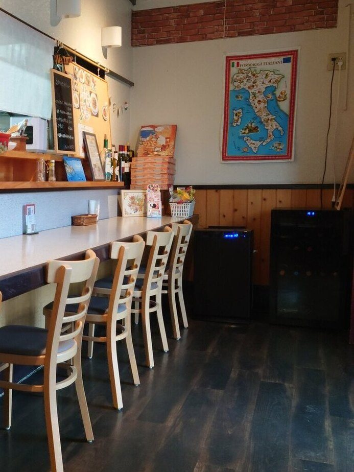

CUCINA ITALIANA
シンプルで、体にやさしいイタリアン。
お昼のパスタから、夜のお食事とお酒まで。古河の町で、気どらないイタリアンを営んでおります。
FARINA
パスタのめんも、ピッツァの生地も、パンも、ドルチェも、当店の厨房で粉からつくっております。パスタはセモリナ粉をこねた自家製の生めん、ピッツァは生地から手づくりの、もっちもちの食感です。パンとドルチェも、一つずつ焼いてお出ししております。


IL SEGNO
当店のお品書きには、小さな印がひとつございます。めんを店の中で打っておりますので、このご用意ができます。
⊙印のパスタは、自家製の平打ちめん（フェットチーネ）にもできます。ご希望でしたらお声かけください

SALA
カウンターと、テーブルと、お座敷をご用意しております。おひとりでも、ご家族づれでも、どうぞ楽に腰を下ろしてください。
VOCE
「こだわりの料理は全部美味しくて、この辺ではなかなか食べられないレベルかと。ピザもモチモチ。」
お客様の声より
「ジェノバ風はバジルでなく、大葉がよく香っていて、モチモチパスタによくマッチしていました。海老もプリプリでした。」
お客様の声より
「手作りをメインとしたお店！お客のニーズにも対応してくれます！」
お客様の声より
PRENOTAZIONI
お席のご予約は、お電話で承っております。お料理のお持ち帰りもご用意いたしますので、お電話でお申し付けください。女子会などのパーティー、貸切のご相談も承ります。臨時のお休みは、インスタグラムでお知らせしております。
ACCESSO
東山田のフラップタウンの一角、「KITCHEN prego」の看板が目じるしです。
| 住所 | 〒306-0112 茨城県古河市東山田582-2 |
|---|---|
| 電話 | 0280-23-1777 |
| 営業時間 | ランチ 11:30〜14:30（L.O.14:00） ディナー 18:00〜22:00（L.O.21:00） |
| 定休日 | 月曜日 |
| 駐車場 | 有 |
一皿ずつ、店の中でこしらえております。どうぞお気軽にお越しください。